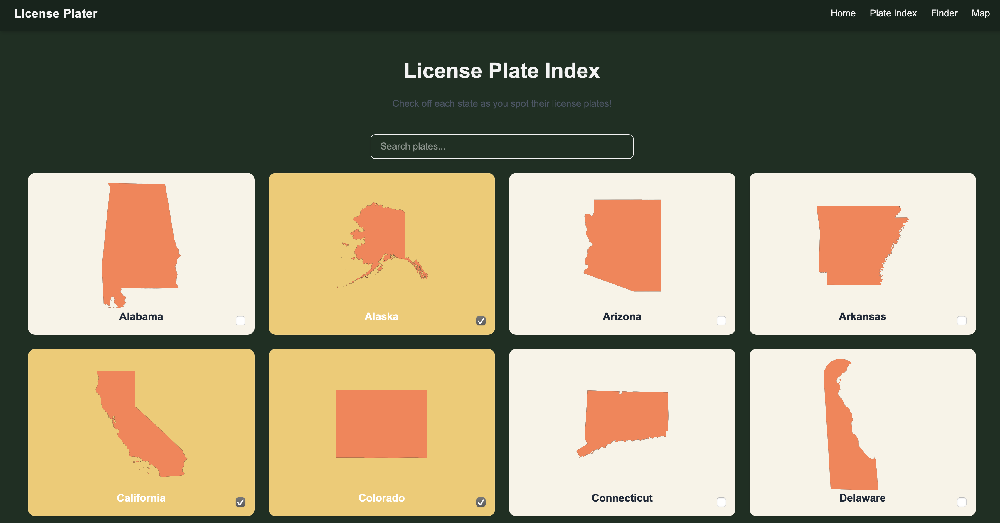
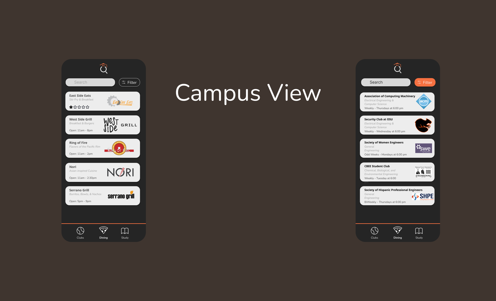
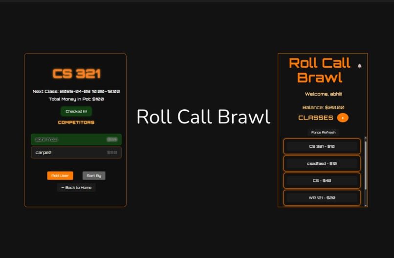
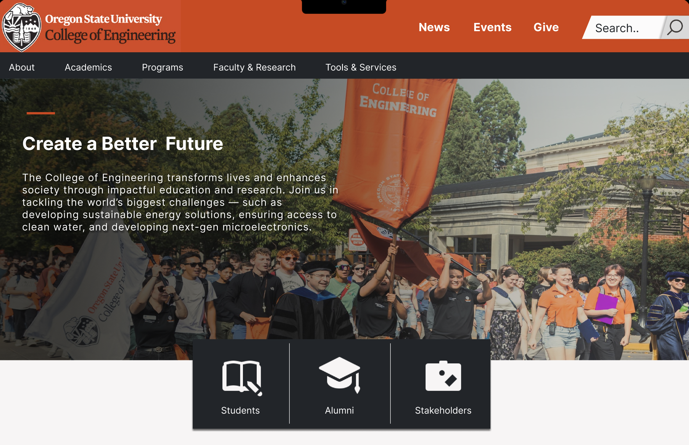
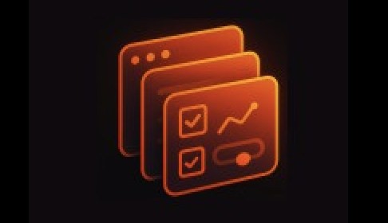
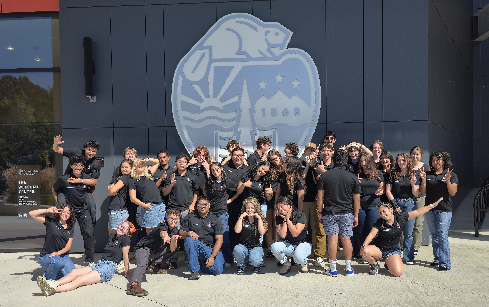
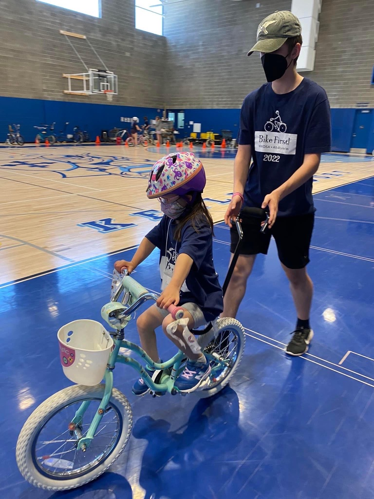
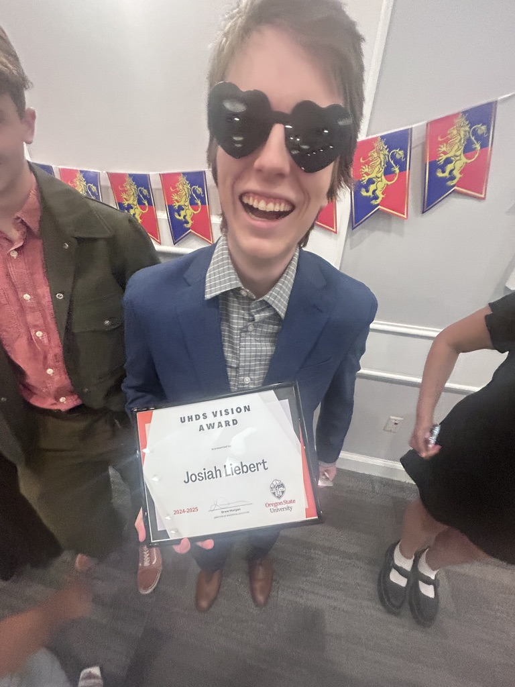
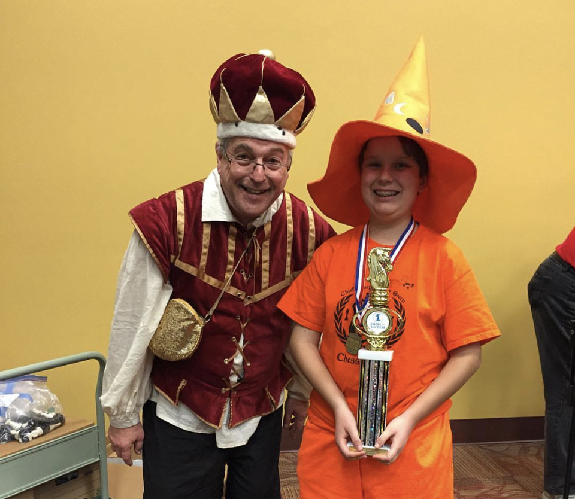
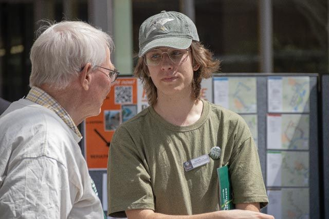

Hello People!
I am a 4th year student at Oregon State University studying Computer Science, with a focus in Business Administration. I am passionate about creating inclusive tools and experiences, both through computer science and in the physical world.
Projects
License Plater
A license plate tracking and finding tool. Still a work in progress, but you can try it out here.
CampusView
A reimagination of Oregon State University's dining & club apps. Repo found here.
Roll Call Brawl
This was the first Hackathon project I participated in. The idea was to create a fun & high stakes game to encourage attendance in classes. Project can be found here.
College of Engineering Website Redesign
This is a Figma mockup of a redesigned website for OSU's College of Engineering. The design incorporates user feedback and usability heuristics to create a user-friendly experience. The mockup can be found here.
Extracurriculars
Product Management Club
I am the Event Coordinator for the brand new Product Management Club at Oregon State University. We are actively in the process of hosting events and creating projects that will allow the product management community to thrive. Learn more about the club here.
College of Engineering Ambassador
I play a role in representing the College of Engineering to prospective students, including leading tours, answering questions, and ensuring full ambassador coverage for events. Learn more about the program here.
BikeFirst
BikeFirst is a organization that teaches children experiencing disabilities the skills needed to ride a two-wheel bike. I am a team leader, so I am put in charge of the progress of five riders, as well as mentoring new volunteers. Learn more about BikeFirst here.
Resident Assistant
For the past two years, I have worked as a Resident Assistant at Oregon State University. I won the UHDS Vision Award in 2025 for my dedication to creating an inclusive and supportive community.
Chess for Success
I used to be a pretty decent chess player back in elementary and middle school, playing through Chess for Success. In high school, I interned with the CFS main office, taught at summer camps, and coached the Rigler chess team to the state tournament. Now I am on the Board of Directors for Chess for Success, helping to guide the organization in its mission to empower youth through chess. Learn more about Chess for Success here.
Community Engagement & Leadership
In the 2023-24 school year, I was an Event Specialist for OSU's Community Engagement & Leadership. I was the lead coordinator for the Beyond Earth Day Community Fair & Day of Service. I also lead the Adopt-a-Bottle program, which focuses on reducing single-use plastic on campus. You can learn more about CEL here.
Connect With Me